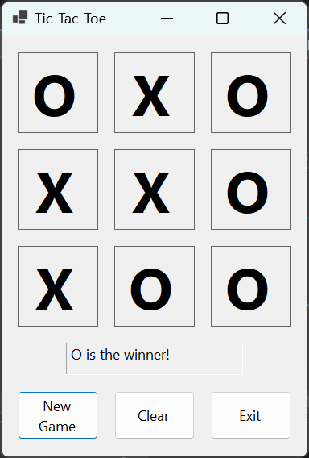
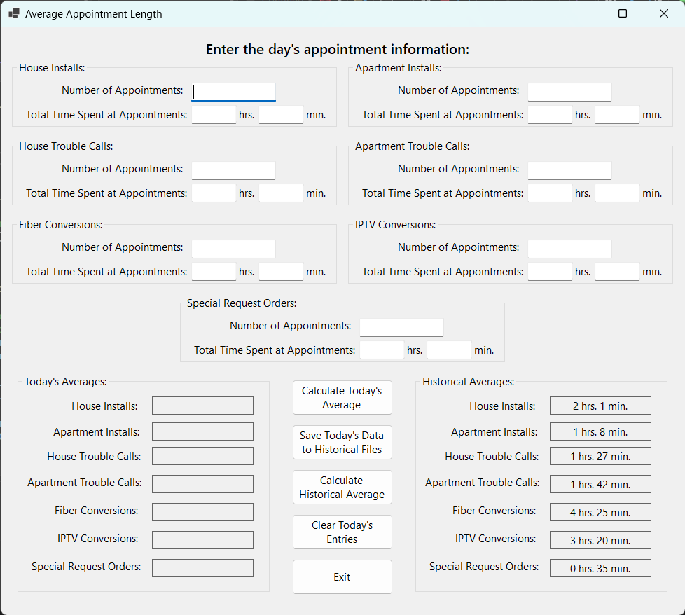
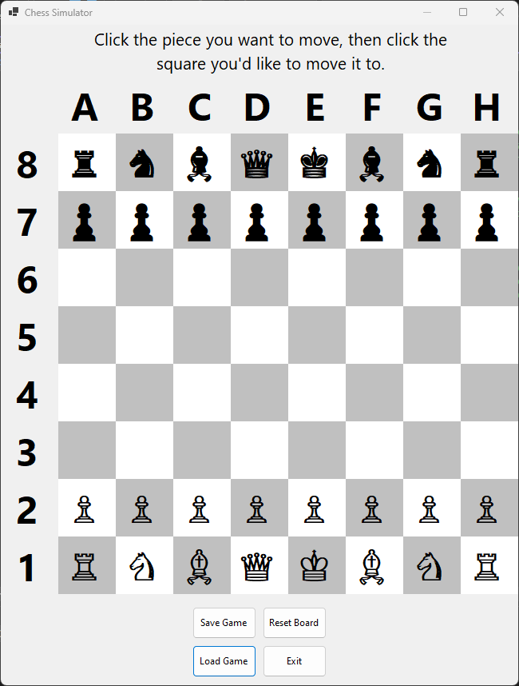

While unrelated to this course, I decided I wanted to include a page about what else I had learned this
semester. This page is intended to showcase some of the projects I made this semester using C#.
Tic Tac Toe

This project was largely intended for the class to display what we had learned about conditional
statements and loops. The board shown here is a standard tic-tac-toe board. Upon clicking the "New Game"
button, the computer fills the squares on the board with randomly selected X's and O's until one of the
winning conditions is met.
Average Appointment Length

Click the image to view a larger version!
This is a picture of my final project for my course in C#. The application allows a user to enter time
data for a variety of different appointment types, then calculates the average time for the appointments.
It also saves the data in files and is able to calculate historical averages for the appointment lengths.
Chess

The assignment for this project was to create an application which would allow a user to display on a
screen the moves taking place in a real-life chess game as they observed it. The pieces can be clicked and
then a square can be clicked to move the piece. Pieces can even be captured just as in real-life chess!